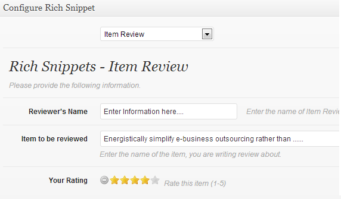
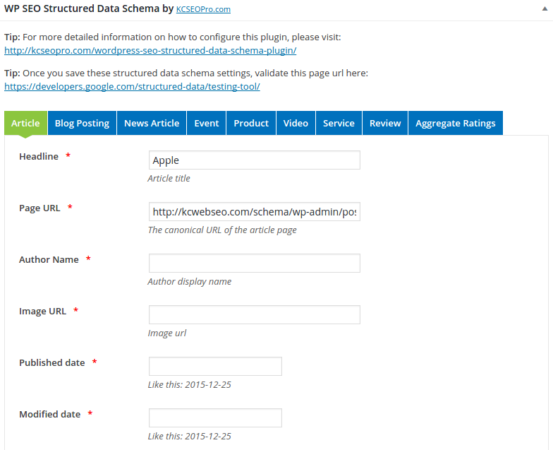
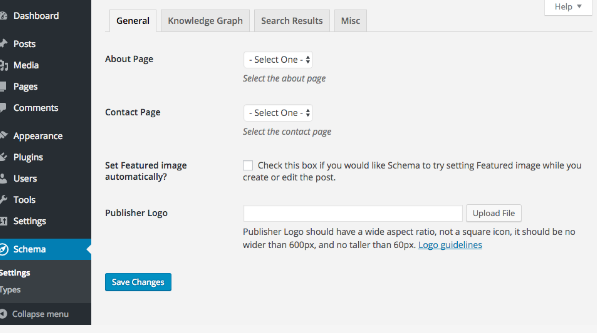
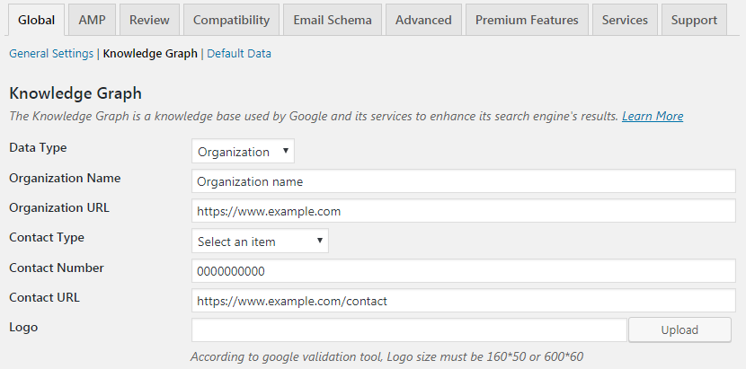
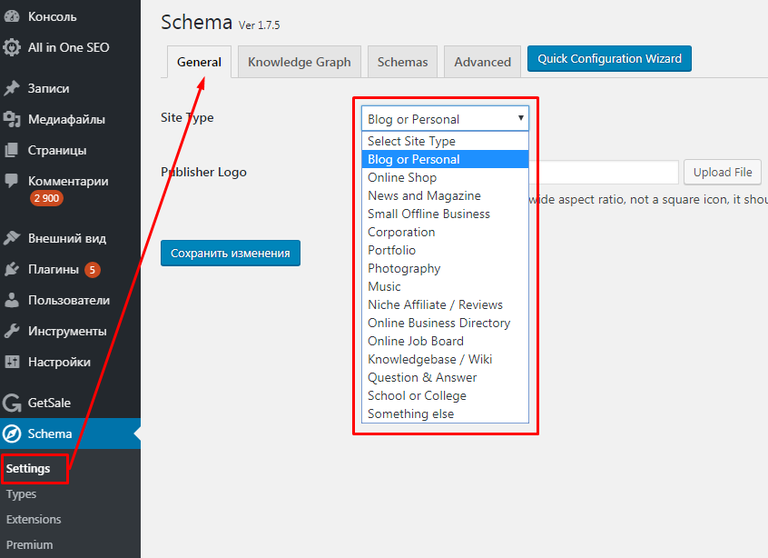
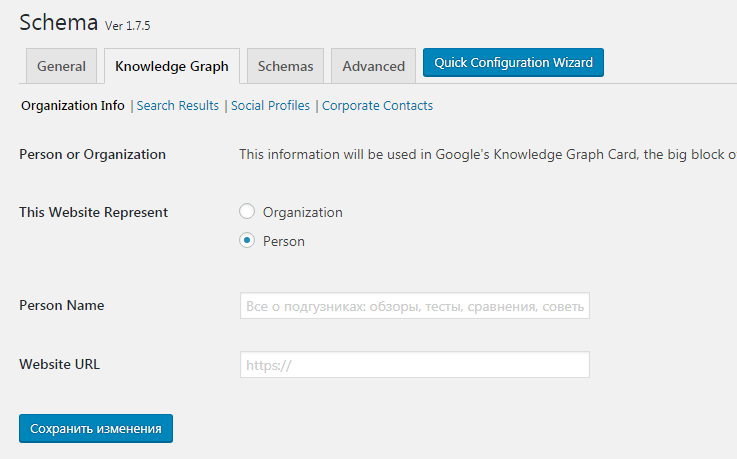
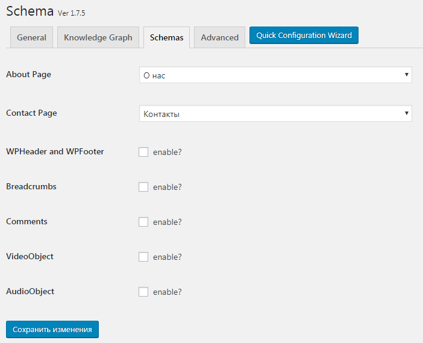
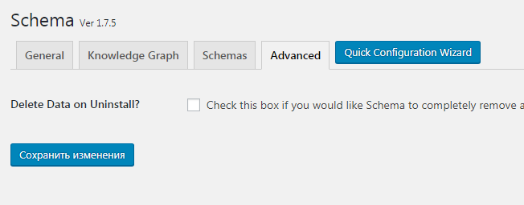
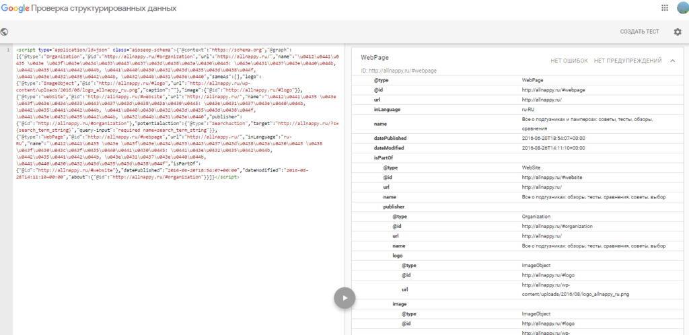

Сайт на CMS? Используйте плагины
Рассмотрим самую популярную CMS в Рунете — Вордпресс. Для Вордпресс есть несколько решений, которые помогут просто и быстро внедрить микроразметку. Вот обзор плагинов, подходящих для этой задачи:
Schema — All In One Schema Rich Snippets
Бесплатный плагин, размечает данные в формате микроданных (подойдет при продвижении в Яндексе, так как вы не можете использовать JSON-LD). Плагин подойдет для разметки товаров, отзывов, кулинарных рецептов, событий и еще нескольких часто используемых видов контента.
WP SEO Structured Data Schema.
Этот плагин также реализует разметку на основе синтаксиса микроданных. У плагина есть две версии. В бесплатной можно разметить данные об организации и локальном бизнесе, товары, услуги, статьи, видео, отзывы и еще парочку типов контента. В платной версии — больше возможностей (стоит платная версия 49$).
Schema
С помощью плагина можно сделать разметку в синтаксисе JSON-LD. У плагина есть бесплатная и платная версии (от 99$). Функционал бесплатной несколько урезан — доступна разметка для статей, блога, хлебных крошек, хедера и футера сайта, видео и еще несколько элементов. Для разметки товаров, услуг и других сущностей Schema.org придется покупать платную версию.
Schema & Structured Data for WP & AMP
Продвинутый плагин для разметки Schema.org с помощью синтаксиса JSON-LD. В плагине можно использовать 33 сущности Schema. Доступен в двух версиях: бесплатная и Про (от 49$).
Настройка микроразметки в плагине Schema: пошаговая инструкция
Установите плагин и кликните по разделу Schema, который появится в боковом меню админпанели. Перейдите в раздел Settings → General. Выберите тип сайта и загрузите логотип.
Сохраните изменения и перейдите на вторую вкладку — Knowledge Graph. Здесь вам нужно указать, кого представляет сайт — выберите Person, если это личный сайт, или Organization (если продвигаете сайт компании).
Перейдите на вкладку Schemas. Выберите из выпадающих списков страницы «О себе» и «Контакты». Если хотите подключить разметку хедера и футера, хлебных крошек и других элементов страниц сайта — поставьте галочки напротив соответствующих параметров.
Также можно настроить автоматическое удаление микроразметки, если будет удален плагин Schema. Для этого перейдите на вкладку Advanced и поставьте галочку напротив «Delete Data on Uninstall».
Сохраните изменения. Проверьте исходный код страниц сайта — в разделе <head> ... </head> появится код микроразметки в формате JSON-LD.
Попробуйте проверить разметку в валидаторе Google (на всякий случай). Плагин работает корректно, поэтому ошибок не должно быть — смело загружайте код на сайт.
Примерно так же строится работа с другими плагинами для Вордпресс. Главное преимущество — вам не нужно разбираться в синтаксисе и прописывать все параметры вручную.